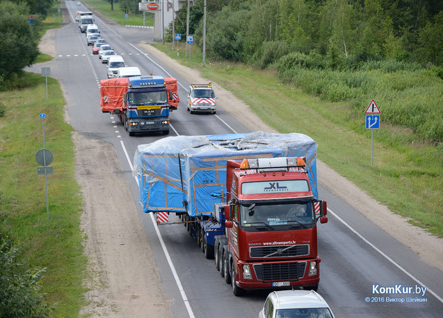
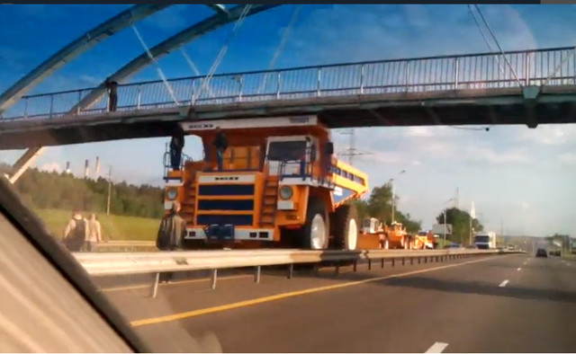
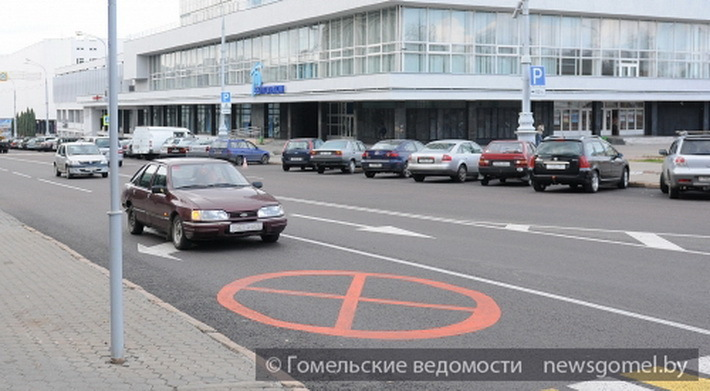

ГАИ осуществляется согласование дорожного движения в случаях, не оговоренных настоящими Правилами, а также при применении в экспериментальных целях технических средств организации дорожного движения, не предусмотренных настоящими Правилами и техническими нормативными правовыми актами. Своевременное доведение в доступных формах до сведения физических и юридических лиц технических нормативных правовых актов в сфере дорожного движения и обеспечения его безопасности возлагается на республиканский орган государственного управления по стандартизации, метрологии и сертификации.
ГАИ осуществляется согласование дорожного движения в случаях, не оговоренных настоящими Правилами
Реальность и жизнь всегда намного многограннее любых правил, включая ПДД.
Пожалуй, наиболее часто необходимость согласования с ГАИ возникает для получения специальных разрешений на
проезд тяжеловесных и(или) крупногабаритных транспортных средств.
Примеры:

Доставка крупногабаритного оборудования на Белшину.
Фото с сайта onliner.by.

Крупногабаритный и тяжеловесный БелАЗ проходит под пешеходным мостом.
Пресслужба БелАЗа уточнила, что в данном случае
маршрут был согласован с ГАИ, а под мостом самосвал прошел на спущенных колесах.
Фото с сайта onliner.by.
Фото Виктора Шейкина с сайта KomKur.by.
ГАИ осуществляется согласование дорожного движения... при применении в экспериментальных целях технических средств организации дорожного движения, не предусмотренных настоящими Правилами и техническими нормативными правовыми актами.
К примеру, в Гомеле на дорогах дублировали знак 3.27, запрещающий остановку и стоянку.

Дублирование знака 3.27 на проезжей части дороги.
Фото с сайта onliner.by.
Фото с сайта Гомельские ведомости
Своевременное доведение в доступных формах до сведения физических и юридических лиц технических нормативных правовых актов в сфере дорожного движения и обеспечения его безопасности возлагается на республиканский орган государственного управления по стандартизации, метрологии и сертификации.
Таким органом является Госстандарт
(Государственный комитет по стандартизации Республики Беларусь)
Доступны две формы:
Формы и методы контроля за выполнением участниками дорожного движения требований настоящих Правил определяются Министерством внутренних дел.
Сложно надеяться на сознательность людей, поэтому, выполнение ПДД и контролирут МВД, в состав которого и входит государственная автомобильная инспекция.